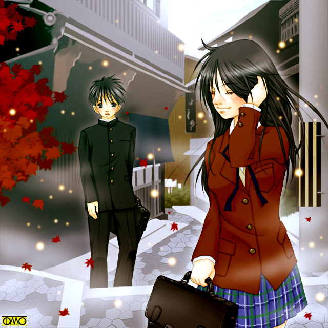

八月の終わりごろ。とある温泉街の夜。一人の少年が露天風呂のある場所を行く。
「ったく、年がら年中おのろけ話。いい歳して恥ずかしいからやめろっつーの」
独り言と言うか誰もいないところでついた悪態と言うか。
彼は「両親」のことを遠慮なく批判した。反発したいお年頃。
「さてと。風呂入ってとっとと寝るか。くたびれたから今日は温泉」
実家が温泉宿の彼。家風呂同様に使っていた。
ご丁寧に浴衣姿だがそれだと温泉の客と思われて、本当の宿泊客に気に留められないと言う理由で着用していた。
彼の名は佐伯飛鳥。
いずみが初めて産んだ息子である。
いずみが急激に女性化した反動でもなかろうが、彼は悪い意味で男性的だった。
がさつで乱暴。細かい心遣いにも欠ける。
女ばかりの一家と言うのもその傾向の遠因かもしれない。
美少女ぞろいの姉妹。その中の唯一の男。中学三年生。１５歳。
お察しの通り美男子だった。彼の前で「女顔」は禁句だったが。
そのせいか髪の毛は短く刈り込んである。野球部と言うのも無関係ではない。
小柄ながらも俊足巧打のセンターでレギュラーだった。
引き締まった男らしい体形をしていた。
彼は人のいない温泉を探していた。
一人の方が気楽である。人付き合いは苦手。そういう理由。
そして惹かれるようにあの『子宝の湯』に…
「飛鳥ーっ」
いくら男の子でもあまりに遅いために一家で探し始めた。
普通の事件や事故の心配もあるが、この土地ならではの心配もある。
そしてそれは見事に的中した。
『子宝の湯』の脱衣所。姿見の前で全裸のまま気を失っている美少女を発見した。
一発で息子だったとわかる。何しろ妹たちと瓜二つ。
「やっぱり、最近利用者がいなかったから魔力が暴走して、それが飛鳥を引き寄せたんだ」
宝田温泉の経営を引き継いだ翔が分析するがもう遅い。
そばにあった浴衣を着せると少女を背負って自宅へと。
ここは佐伯家のある部屋。和室の十畳間。その中央に敷かれた布団に寝かされた美少女。
「う…ううん」
それがうめき声とともに気絶から醒める。そしてがばっと身を起こす。まるで悪夢を見ていたかのように。
「オレは？ 温泉に浸かったら女になって気が遠くなって…湯あたりしたのか？ それで悪い夢を」
「現実逃避はやめなさい」
クールにいう女子高生。
「姉貴！？…………な…なんだこの声」
國府田マ○子か。中原○衣か。田村○かりかと言う可愛らしい声に。冷静になってやっとそれに気がついた。
「あら？ 気がついたのね」
洗面器に水を汲みなおしてきた母・いずみが戻ってきてその状況を把握した。
「湯あたりもしたのかしら。あたしもそのときは気絶しちゃったけどね。それにしてもサイズが合ってよかったわ」
サイズ？ 浴衣なら別に…気絶から醒めた少女・あすかは自分の腕がピンクの袖に包まれていることに気がついた。
「ちぇ。あたしより似合っているじゃない」
長女。舞が悔しそうに言う。彼女が買ったものだが今ひとつフィットせずタンスの肥やしになっていたのだ。
「こ…これって…ネグリジェ。どうしてそんなものを着て寝てるんだ？」
「女の子だからじゃない」
次女・愛がクールに言う。
「あんまり可愛いもんだからつい着せてみたくなっちゃったのよ。ごめんね」
気絶した「弟」を着せ替え人形にすると言うのも、どこかの暴走女教師のようであった。
「はい。お姉ちゃん」
本人は親切心で鏡を差し出す三女の凪。
それを受け取り恐る恐る鏡を見ると…紛れもない女の顔があった。
あすかは再び気を失った
今まで感じたことのないような胸元の感触で目が醒めた。
「あっ。気がついた」
「オレは…おい？ 何してんだよ？」
「見てわからない？ バストサイズ測ってんのよ」
舞がメジャーを手に「なに当たり前のことを聞いてんのよ？」と言わんばかしの口調で返答する。
かつていずみが子宝の湯に浸かったときは幼女のような平らな胸だった。
ところが両親ともに子宝の湯による出産を経験。そのＤＮＡのせいか。それとも魔力が元から影響していたのかあすかは性転換した途端に「大人の胸」だった。
子宝の湯に浸かった女性は安産できる健康な肉体になる。
つまり言い換えれば身体的トラブルが排除される。
出るところは出て、引っ込むところは引っ込む。
それゆえこの秘湯の効果を得た女は例外なく美女である。例え元は男でもだ。
野球部で鍛えて浅黒かった肌は、秋田美人でもここまでは行かないだろうと言うほど白く輝いていた。
まつげも伸びた…いや。量も増えたのかもしれない。
鼻はやや低いがそれが逆に愛らしい印象を与える。
スポーツ刈りのその短髪も、いきなり背中までのロングヘアに。
細くてしなやか。艶やかなかなり美しい髪だ。
首から下に再び目を向けるとトレーニングで培った筋肉は跡形もなく消え去り、なだらかな曲線を描いていた。
いずみが元々小さかったためか子供であるあすかもそんなに大きくない。
充分普通の女性服が着られる体格だ。
ただしお尻だけはかなり大きい。野球部員として腰が鍛えられたせいなのか。それとも安産のために骨格も極端に変えられた結果か。
この下半身では女性用パンツでもなかなかあうものがなさそうだ。スカートを余儀なくされるのが予想できた。
「うん。美人だ。目元はいずみに似てるかな」
しげしげと嬉しそうに言う父親。
「父ちゃん…その反応はなんだよ」
「仕方あるまい。こうなったら一年は女でいないといけない」
それは自身の体験。いずみの体験でよくわかっていた。
「一年も腐っていたらよくないわよ。長い人生なんだからその間くらい女の子を楽しみなさい」
女性化に関しては超の着く先輩である母親がアドバイスを。
「できるかよ！」
思わず怒鳴るあすか。しかしいずみの反応は予想外のものだった。
「あら？ こうやって怒るとあなたそっくりね。普段はぶっきらぼうに言うだけでこんな風に怒鳴らないから知らなかったわ」
微笑んで夫に語りかける。
「そうだな。だが寝顔はお前と同じで可愛かったぞ」
こちらもにっこり優しい笑みで返す。
「やだ。あなたったら。照れるじゃない」
頬を染めて「きゃっ」とばかしの仕草でそれを隠すいずみ。
「話聞け。このバカ夫婦」
この境遇で乗じることが出来るほどの大人なあすかではない。
「こら。自分の親になんてことを言うのよ」
舞がしかりつける。
「だって姉貴。こいつら」
「いいよ。舞。仕方ないよ。オレも女になった時は自暴自棄になったもんだ。戻るためにまた傷ついた。でもそれをいずみが癒してくれた」
「ううん。あたしだってはじめて女になった時は不安で不安で。あなたが支えてくれたからこうしていられるのよ」
「いずみ…」
「あなた…」
見詰め合う中年夫婦。もし二人きりならそのまま少年少女文庫さんでは書けないような世界に突入確定だった。
「いい加減にしろや。この中年バカップル」
「そんなこと言う子はこうだ」
「ひゃっ？」
あすかのいきなり胸元に未知の感触が。大人の女性になくてはならない下着があてられたのだ。
「うん。ちょっと（ブラジャーが）大きめだけどパットで調整できるわね」
「なにしやがる！？」
ここに至ってあすかは「トップレス」であることに気がついた。
しかしいきなり女になった身では羞恥心などあるはずもなかった。
「言ったでしょ。バストサイズを測っているって。どうやらあたしのお古が何とか使えそうだから明日はそれで凌ぎなさい」
「凌いでどうすんだよ」
「ホント頭悪いわね。あんたの下着から何からいるでしょ」
「な！？」
頭をぶん殴られたようなショック。俺がブラジャーつけんのか？
「そのネグリジェはタンスの肥やしになっていたからそのまま上げるわ。制服も調べた限りじゃあたしのお古で行けそうだし」
「えーっ。お姉ちゃん。あたしにくれるんじゃなかったの」
約束を反故にされた次女がむくれる。
「はいはい。愛。あなたにはちゃんと新しいのを買ってあげますから」
「やったぁ。これもお兄ちゃんがお姉ちゃんになったおかげね」
現金なもので新品を買ってもらえるとなったら、途端に機嫌の直った愛である。
「あら。似合うじゃない」
暴走止まらず。そのまま制服の試着になった。
現在は中学三年生。ブラウスに海老茶のブレザー。チェックの青いスカート。そしてアイボリーのベストと言う姿だった。
「今年だとリボンは赤かしら。あたしのときは緑だったからそれだけはちゃんと買ってね」
かつて舞が通い、あすかの通う中学の女子制服はリボンが年度ごとに色違い。
舞の年は緑だったがあすかだと赤になるのだ。
「お前ら…なんでそんなに冷静なんだよ？」
マジで切れる五秒前のあすか。
「だってぇ。この街には昔からそんな話あるし。
お母さんだって男で生まれてきたのにお父さんのお嫁さんになりたくてもう一度子宝の湯に浸かったくらいだし。
別に今更女になった男を見ても驚かないわよ」
小学生とは思えない理論の組み立てで論破する次女。
諦めたのか落ち着いたのか。おとなしくなってきたあすか。
試着した制服姿のスカート姿のまま布団の上に胡坐をかく。
「ふぅ。どうやらこの姿で過ごさないといけないのはわかったよ。それで。自分から女になった母ちゃんはともかく、父ちゃんはどうやって男に戻ったんだよ」
そりゃ当然の質問である。
「決まっているだろう。舞のおかげで戻れたんだ。ありがとうな。舞」
「そんな…照れちゃう。お父さん」
弟には辛らつな舞もファザコンの気があるのか父・翔の前だとしおらしくなる。
「話進めろや。バカ親子」
またイライラし始めたあすか。
「だから…これで終わりだよ」
「終わりって…もしかして…子供を産まないと元に戻れないの？」
顔面蒼白になっての質問に、経験者である両親が揃って頷く。
この日３度目の気絶をあすかはした。
その夜。一晩中、少女の啜り泣きが途絶えなかった。
翌朝。泣きはらした真っ赤な目であすかが朝食の食卓に現れた。
「あらあら。すっかり乙女ね」
キャミソール姿の舞が意地悪く言う。
「舞。あんまりいじめちゃダメよ」
「だってお母さん。コイツったらいつまでもうじうじと。もうちゃっちゃとやって来なさい」
「できるか！」
前日なり立てのにわか娘にそんな覚悟があろうはずもない。
「はいはい。あすか。食べたらデパートに行くわよ」
身重なのだがてきぱきと食事の準備をしているいずみがさらっと発言する。
「女の姿でかよ？」
できれば身内にすら見せたくなかった姿だ。
「仕方あるまい。たとえ今日仕込んでも十ヶ月は女だからな。色々と入用だ」
「やだお父さん。『仕込む』なんて下品」
「はははは。すまんすまん」
「……なんだってそんな能天気な会話してられるんだよ」
カルシウムを急激に消耗したのか、短気に拍車が掛かっている。
「とにかく。朝一番で行くわよ。とりあえず当面の衣類。特に下着はちゃんとしないと。女の子は清潔にしないといけないのよ」
とても二十代初めまで男として生きてきたとは思えないほど「女としての貫禄」に満ちたいずみが言う。
「買い物は頼むぞ。いずみ。俺は仕事の合間に学校のほうに連絡しておくから」
「任せて。うんと可愛い服を選んであげる」
両親の会話に男としてのアイデンテティの危機を感じているあすかである。
結局、夏場と言うこともあり大量の女性服を買い込まれあげく、美容院にまで引っ張り込まれ髪を整えられたためますます女性的になってしまったあすかだった。
夏休みが終わった。
恋をしたのかちょっと綺麗になってきた女子。
悪に憧れる年頃なのか突っ張ってきた男子。
軽いところでは髪の色を変えたり、めがねを変えたりとか長期休暇で大なり小なりの「変身｣があった生徒たち。
しかしそれもこれも「女になってきた」あすかの前ではかすんでしまった。
ホームルーム。担任の男性教師があすかを黒板の前に立たせて紹介する。集中する視線が本当に痛かったあすか。
「えー。噂に聞いたことはあると思うが佐伯は『子宝の湯』で女になってしまった。最低でも一年は男に戻れないからこれから卒業までは女子として扱う。いいかな？」
唖然としていた一同だが『子宝の湯』についてはおぼろげに知っていた。
伝説が今、彼らの目前に具体的に現れた。
それで女になったことに関しては理解できた。
次に思い立ったのが「その魔力の解除方法」である。
（まさか…佐伯…）
（子供を作らないと戻れない？）
（と、いうことは相手は…）
体だけ大人になりかかっている年頃である。
一気に野獣の群れになった。
『治療』の名目で堂々と『体験』できる…と。だが
（しかし…『やらせてくれる』としても）
（子供を作らないと元に戻れないんだよな）
（ということは協力したら俺、中学生なのに父親ーっ？）
一気に子羊の群れになった。
結婚も出来ない歳で『父親』になんてなりたくない。
ボーイフレンドのいる女子は女子で、男子達のそんな葛藤を知らないものだから『治療』の大義名分で堂々と『関係』を持たれてはたまらないと考えた。
女にとられるならまだしも、いくら体が女でも男に自分の彼氏をとられてたまるか。そう考えていた。
中には例外で自分の彼氏と『男の』飛鳥のカップリングを想像する剛の者もいたが…
好奇の目に晒されるあすか。耐え難い状態だった。
しかし奇妙なものでそれで逆に腹が決まった。
（とにかく子供産まないと一生女。こうなったらもうやってやるぜ。幸い「子宝の湯」はどんな状態でも一回で決まるらしいからいやな思いは一度ですむ）
ちなみにあすかの母。いずみは翔となんども関係を持ったが、これはもう一度禁を破ったならと、とことん欲望のままに突っ走ったからである。
強制的に安産できる体にする子宝の湯には一度で充分なのである。
しかしあすかの覚悟は決まっても、他の男子の覚悟はあるわけがない。
数日が経過したがまったく男子からのアプローチがない。
（なんでだよ？ 目をぎらぎらさせてよってくるかと思ったのに）
目論見が外れていらつくあすか。蟹股で歩くから美少女台無しである。
鬱憤晴らしをしたい気分だった。
校舎裏に差し掛かったらちょうどいい相手たちがいた。
不良男子三人が気の弱い同窓生相手に金を要求していたのだ。
また小柄な上に童顔だから余計弱そうに見える。
一度も一緒のクラスになってなくて、他に接点もないからか見たことのない顔。
「ほら。出せよ。持ってるんだろ」
定番の台詞でも気が弱い少年には脅しの効果は充分だった。
「あ…あの…」
おどおどした態度が付け上がらせる。仕上げとばかしに胸倉をつかもうとしたら背後からあすかに股間を蹴り上げられた。
「が？？？？？？」
股間を押さえて悶絶する不良その１．
（こんな奴ら相手ならぶちのめしても心がいたまねぇ。けり返される心配もないしな）
何しろ男子最大の急所がなくなっている。
「このアマ！」
残りの二人があすかのそれぞれの腕を取って押さえつける。
（よし。まわされるってのが気にいらねえがこれで元に戻れる）
それでにやっと笑ってしまったのが失敗。
今まさに襲われている女の表情ではない。
不良たちの警戒心が働いた。
「お…おい。こいつ、三組の佐伯じゃ…」
「ええっ？ 一発やったら本人は男に戻るが、やった奴が入れ替わりに女になるっていう？」
「子宝の湯」自体口コミで広まるほどの存在である。間違った情報も流れよう。
三人の不良たちは押さえつけていた手を離してあとずさる。
「お…おい？ なんだよ。やるんじゃないのかよ」
挑発と言うより本気で不思議に思い尋ねてしまうあすか。蒼い顔の不良たちは
「じょ…冗談じゃねぇぇぇぇっ。女にされるなんて真っ平だーっっっ」
まさにクモの子を散らすように逃げて行った。
「ま…待てよ。おい。逃げるなよ」
残されたのはあすかと恐喝されていた少年だけ。
「ったく、でまかせで逃げるなよな」
ぼやくがさすがにレイプは嫌だったのでそんなに残念そうでもない。
「あ…あの…助けてくれてありがとう。佐伯さん。僕は高屋小太郎（しょうたろう）」
助けられた礼を言う小太郎。それを睨み付けるあすか。
「ひっ？」
びびった隙に壁際に。そしてあすかの両手が彼を閉じ込める。
「じゃ、助けた礼に子種をくれよ」
「え…ええっ？」
金とかならまだしもそんなものを？
「ほら。出せよ。持ってるんだろ」
「そ…そんな、僕まだ経験してないのに」
まぁ１５歳で経験済みだったりしたら、そりゃ凄い。
小太郎の泣きそうな表情を見ていたらあすかは急に白けた。
「ジョークだよ。ほら。さっさと行けよ」
「う…うん。ありがとう。佐伯さん」
何度も礼をして立ち去る小太郎。
「佐伯さん…か。女子扱いかよ…」
乾いた笑いを上げる。
「ただいま」
不機嫌そのもので帰宅するあすか。結局は男子からのアプローチはなし。
「あーくそ。自分で言うのもなんだけど、結構な美人になっているのに何で寄り付かないかな？」
子種を得られないことで「魔力」がますますあすかの「オンナ」を磨く。
近寄りがたい美貌になってきた。
この場合は元男と言うのが逆に幸いしていた。
美男子でも美女でもどちらかと言うと中性的なものが多い。
元々男の骨格だけに、後から女のそれになったといえどどうしても中性的になる。
「教えてあげよーか？ あすか」
「姉貴…勝手に部屋に入ってくるなよ」
ここはあすかの部屋。乱雑に散らかり、また殺風景である。
いつのまにか舞が部屋に入ってきていた。
「まずは言葉遣い。あんた、女が男みたいな言葉遣いしていたらどうかしら？」
「うーん。確かに引くよな。古臭いと思ってたけど」
男だった時を思い出して考えて見る。
「そうでしょ。男の子を動かそうと思ったらプライドをくすぐるの。一段下がった方が効果的よ」
「そんなぁ。そんなみえみえの手に」
「乗るのよ。男は。馬鹿だから」
きっぱりと断言する舞。
「とうさんだって男だぞ」
「お父さんはいいのよ。かっこいいから」
ポッと頬を染めて照れる舞。筋金入りのファザコンだ。
「脱線したわね。とにかく、男はいい気分にさせてあげるか、可愛くねだれば大抵のことはしてくれるわ。ましてやアンタの場合男の子が一番欲しがるものを自分から差し出そうとしてるんだもの」
女から見ると男はそう見えるのか…認識を新たにしたあすかである。
自分の経験から行けば当たっていなくもないので説得力はあった。
だからそのアドバイスに従おうと言う気にも。
「そうかぁ。しかしオカマになった気分だ…」
それでもさすがに躊躇はある。
「いやならいいのよ。一生女でいいならね」
「や…やります…わ」
最後の「わ」で背筋に悪寒の走ったあすか。
いくら少女の声でも自分の口から女言葉と言うのが気色悪かった。
「佐伯さーん」
翌日。登校中のあすかを校門前で呼び止める声。
「ん？」
振り返ると小太郎が手を振りながら駆け寄ってくる。追いついて荒い息をする。やっと呼吸を整えて
「昨日はありがとう。佐伯さん」
「なんだよ。礼なら昨日のうちにすんだだろう」
全部口に出してしまってから姉のアドバイスを思い出した。
「こほん」
咳払い一つ。注意をひきつけるのと精神統一目的。
「なぁに？ お礼ならもういい…わよ」
女言葉を意識して使ったが全身を掻き毟りたくなった。
（気…気色悪いぃぃぃ。でもガマンガマン。これも男に戻るまでの）
「わぁ。言葉遣い変えたんだね。うん。こっちの方が可愛いよ」
「可愛い……」
童顔の少年に可愛いといわれて一瞬ほほが熱くなる。そして
（ちょ…ちょっと待て。何でときめく？ そりゃ子供産まないと戻れないから覚悟は決めたけど、あくまで心は…）
激しく動揺したが予鈴が現実に引き戻した。
（「可愛い」かぁ…男のときは言われても嬉しくない言葉だったけど、女になったせいかなんか…）
生まれついての女なら多少は言われてきた言葉ではあるが、あすかが最後に可愛いといわれたのは十歳の時。
つまり慣れてないせいかまともに効いてしまった。
（しゃーねぇ。ちょっくら男だますか）
そっちの方が早道と考えた。
男に戻るために女らしく振舞うと言うのだから、奇妙な話だが。
女の仕草や言葉遣いを習得するために「習うより慣れろ」と女子のグループに混じることにした。
最初は警戒されていたが「このまま一生女で生きたくないから」と言う理由であるとわかったので協力することにした。
ただきっちり自分の彼には手を出さないように釘を刺した。いわゆるプロテクトということか。
肉体が女。つまり女脳。言語関係やコミュニケーションに強くなったあすかは、見る見るうちに女言葉になれはじめた。
実際に女性は訛りを治すのも得意だ。
幸か不幸か肉親も父親以外は女ばかり。練習やサンプルの相手には事欠かなかった。
そして仕草。細やかでしなやかで小さな動き。それでずっと女性的になってきた。
スカートで過ごす日々が小さなストライドに。そして内股を習慣づける。
秋のある日。
「佐伯さーん」
「あら。小太郎」
校門前での合流。
助けられてから慕ってくるようになった小太郎。
彼は付き合っている女子がいない。つまりプロテクトが掛かってない。
そのため協力している女子の反発はなかった。
追いついて来るまでその場で待つ。髪をかきあげる仕草もすっかり女性的になったあすか。
「うわぁ……」
そんななんでもない仕草が色っぽく見えた。
「なぁに？ あたしの顔に何かついてる？」
慣れてしまいもはや悪寒も走らなくなった。口調も柔らかくなっていく。
「ううん。綺麗だなって思って」
「あら。ありがとう」

このイラストはＯＭＣによって作成されました。
クリエーターの＊ミチル＊さんに感謝！
ここでふと真顔になる…「素に戻る」と言うほうが表現は正しいか。
「なぁ。小太郎。俺って…何してるんだろうな」
この時点では話す言葉こそ女言葉主体だが、思考の際はさすがに男言葉だった。心からの言葉だからか本来の男言葉が口をついてくる。
「なにって」
「女で生きていくのが嫌だから元に戻ろうとして、それで女の言葉遣いや仕草まで。あべこべじゃねーか？」
「でも…それしかないんでしょ」
「そうなんだけどよ…心まで女になってしまったら元も子も…」
そのときだ。突風が吹き女子のスカートを盛大に捲り上げた。
あすかも例外ではない。むしろスカートをはくようになったのが最近で、生粋の女子に比べて警戒心が弱かったためもろに下着が見えた。
「きゃあっ」
こっちもまた心からの悲鳴。慌ててスカートを抑えるが遅かった。
「……」
唇をかみ締め真っ赤な顔の彼女は、上目遣いで小太郎をにらむ。
「見た？」
「ちょ…ちょっと」
「バカ！ エッチ。信じられない」
そのまま怒りながら校舎へと。
（佐伯さん…もう既に心から女の子じゃ？）
とっさにそこまで芝居できるなら大した物であるし。
小太郎がそう思うのも無理はない反応だった。
クラスが違うために出会いはあれが初めて。
そのときは僅かにあすかが上回っていた身長。
しかし三学期の時点では逆転していた。
子宝の湯で女になった男は身長も縮んでいく。１６５センチがここではもう１５８センチにまで落ちていた。
それに対して小太郎は成長期か１６３が１６７に。
必然的に上目遣いにならざるを得ないあすか。
その仕草がかなり可愛く見えるほど女が板についてきた。
だがいくら芝居しても心まで女になりたくない。
だから心の中では男言葉を維持していた。
冬のある日。
あすかと小太郎はあすかの部屋で勉強会をしていた。
「お待たせ」
一服するためにお茶とケーキを持ってきた。
家族が差し入れに来ないのはもちろん「配慮」してである。
お茶を飲みつつ、ふとしたきっかけから身の上話。
「あたし…俺ね、お母さんが一度男に戻るために妊娠した時の子供なの…なんだ」
もはや女言葉が通常で、男言葉がすんなり出なくなってきていた。
「佐伯さん…」
「最初は落ち込んだよ。それ知ったときに。『ああ。あたしは…俺はただ元に戻るための行為の副産物なんだ』と。まぁ親の仲のよさからそういうわけじゃなくて、どうやら自然な成り行きでと理解したけど」
ここで一口紅茶をすする。湿った唇が艶っぽい。
「それで今この状態でしょ…だろう。だから俺はせめて子供は愛してあげたい。いい加減な…その…あの…」
頬を染めて言いよどむ。恥じらいも芽生えた。
「でも…そうも言ってられないしね。タイムリミットがあるから。誰でもいいからなんてことになりそう。だから、なおさら…」
奇異の目を向けられるあすか。そのそばにいつもいて、結果として精神的に支えてきた小太郎にあすかはこんな話しをするほど心を開いていた。
「ボクじゃ…ダメかな？」
小太郎もトマトのように真っ赤である。
くすっ。少女そのものの笑顔であすかは小太郎の額を右手の人差し指でつつく。
「ばーか。カツアゲされてるような軟弱ものにあたしの相手なんて出来ないわよ」
「あはははは。そうだね」
馬鹿にされているのに笑っている…と言うよりむしろはぐらかされてほっとした小太郎。
そしてあすかはその気持ちが嬉しかった。
それだけに小太郎をただ「魔力の解除」のために利用なんてしたくなかった。
いろいろ有ったが卒業して、地元の高校に進学した。
進路に関しては自分の素性を知らないどこか別の土地の学校も視野に有った。
しかしそれでも地元を選んだのはその特殊な事情。
在学中に妊娠となれば大騒動である。
相手の男子は退学確定であろう。
そんなリスクで自分に手を出す男がいるとは思えなかった。
同窓生じゃなく行きずりの男と言うてもあったが、それはさすがに抵抗があった。
父である翔のトラウマを聞かされていたのも抵抗の原因。
それに援助交際となると自分が退学の危険性もある。
そうでなくても妊娠となれば休学は避けられない。
男に戻れても高校中退になる。
しかしこれがこの土地の高校となると話が違う。
何しろ歴史がある。だから事情も理解される。
事実、過去には「協力した」男子もお咎めなしだった。
そして出産前後の分は補習を受ければよいとまで。
こうなるとさすがに地元に進路を向けたくもなる。
ただ…地元だけに大半が同じ中学出身であったのだが
しかも小太郎まで同じクラスに。ほとんどがあすかの正体を知っている。
「まさかあなたまで一緒だなんてね」
偶然近くに座ったあすかと小太郎。今は担任の教師を待っている。
「僕でよければ色々と助けてあげるよ」
一度助けられたといえど義理堅い少年である。
「ありがと。そのときはよろしくね」
にっこり微笑むあすか。ドキッとする小太郎。彼は小声で語りかける。
「佐伯さん。随分と女っぽくなったんじゃ？」
「そうかもね。本当に慣れる物ね。夏からずっと女の中にいたし。言葉遣いも様になってきたでしょ？」
「うん」
「でもそれも元に戻るまでよ。そのためには…」
教室の中なので言葉は濁した。まさか妊娠・出産が唯一の方法なんて言えない。
もっともこの土地でしかもほとんどが同じ中学からの入学。一年にはまず隠せるはずもない。
（だけど…二年や三年の先輩ならあたしの正体を知らない人もいるかもしれない。知ってても欲望のままに抱いてくれるかもしれない）
このころになると頭の中での言葉遣いまで女言葉になっていたあすかである。
本人的には妊娠するために男をひきつける…魅力的な女に見せる「芝居」。
しかし、その状況と環境。女の体と「子宝の湯」の魔力が急激に精神面も侵食する。
だが本人も含めて誰も知らない最も重要な要素は…
「はぁい。みなさん。入学おめでとう。今日から皆さんの担任を勤めさせていただきます。西原世奈です。担当は英語です。卒業までよろしくお願いしますね」
茶色いロングヘア。丸いメガネの美人教師だった。
どうやら恐い担任でないらしいとほっとする生徒たち。
その「隙」を突くかのように爆弾発言。
「それから…このクラスにいる佐伯あすかさんは女子生徒扱いですが、実は男の子です。子宝の湯で女の子になってしまいました」
ざわめく教室。彼らには子宝の湯は絵空事ではない。
そしていきなり暴露されて青ざめるあすか。
大半は知り合いといえどそうでない男子もいた。
また入学直後ではカップルになってない確率も高く狙い目だったのにぶち壊しである。
「男子生徒の諸君。いくら「治療」と言うことでも、不純異性交遊は禁止ですからねぇ」
初対面なのに殺意に近い感情まで担任に抱いてしまったあすかである。
ならばと迅速な行動に出る。
翌日。正体を知られる前にと２〜３年男子に接近を開始した。
ターゲットはピアスまでしている美形。杉本研二。
校則で許可されるとは到底思えないピアスを堂々としている。つまり道徳観念は低い。初対面の女子を抱くのに抵抗が希薄ではないかと考える。
そしてこの美形である。顔に惚れたとか言えば不審に思われない。そういう理由だった。
「あの……」
わざとおずおずと声をかける。
「なに？ もしかして俺のファン？」
芸能人でもないのに…自意識過剰が服を着て歩いているような男だった。
だがこの展開はあすかには好都合だった。
「はい。そうなんですぅ。先輩、かっこいいなぁと思って。高校で彼氏作るのが夢だったんです」
舌足らずな口調で上目遣い。「演技」が上手くなってきている。
元々が男だけに男から見た「可愛い女の子」と言うのを理解していた。
「んー。そうだろうそうだろ」
訂正。馬鹿が服着て歩いている。
「君も可愛いよ」
言うなりあすかのあごをくいと持ち上げる。
初対面でキスまでするような男。こりゃ期待できると思ったが
「こらーっっっっ。不純異性交遊は許しませんっっっっ」
どこで見ていたのか西原世奈が「ハリセン」を手に乱入してきた。
「げっ？ 西原」
別に体育会系のマッチョな男性教師が竹刀片手に来たわけではない。
それなのに慌ててこの女教師から逃げ出す軽薄美少年。
顔か火の出る思いでここまでこぎつけたのに寸前で逃げられた。
呆然とするあすか。その両肩に自身の両手を乗せる西原教師。
「危なかったわね。ダメよ。女の子は軽々しく行動しちゃ」
言葉だけなら身を案じてだが妙に含むもののある視線。
それに気がつかないほどあすかは平静ではいられなかった。やっとのことで
「……失礼します」
とだけ言うとその場を立ち去った。
その後もことあるごとに学校でのアプローチを妨げる西原世奈。
「どうして…どうしてそんなに邪魔するんですかっ」
とうとう「切れて」問いただすあすか。まるでその質問を待っていたかのように笑う西原。
「ふふふっ。あなただけ男に戻してたまるものですか」
「あなた『だけ』？ まさかっ！？」
この土地だ。他にも「被害者」がいても不思議はない。事実両親は二人とも経験者。
「そうよ。あたしも『子宝の湯』で女になって、そして戻れなかった男」
本当に狭い界隈である。
「協力を求めたのに男子はみんなしり込みしたわ。結果として誰にも抱いてもらえず今日まで処女。恐らく今更産んでももう戻れない。あたしだけ不幸になってたまるもんですか。あなたも死ぬまで女よ」
腰に手を当てびしっと指差す。
「そ…そんな…あたしが何をしたって言うのよ…」
涙ぐむその様ももう演技とは思えない。
「うふふふ。さぁ。あたしをよく見なさい。これが未来のあなたの姿よ」
「う…うう…バカぁあっ」
ジャンプして顔面にキックをめり込ませるあすか。
女であるが自分も同じ。元男と言う点でも同じで遠慮しなくなっていた。
顔を蹴られたことでなおさら執拗に妨害をするようになった女教師。
すでにあすかの正体は全校生徒の知るところになっていた。
こうなるともう学校では相手を求めるのは絶望的である。
近づいても妊娠目的に取られる。
「交渉」だけなら望むところだが、その先の妊娠は避けたい男子にとってあすかの相手はしたくなかった。
そうなると学校以外に相手を求めることになる。
だが繰り返すがそれは抵抗があった。
ただ「魔力の解除」のために生まれる子供。それがあまりにかわいそうだと。
それに自分の体の中に入ってくる相手である。
両方の点から誰でもいいとは行かなかった。
夏を待たずに浮いた存在になるあすか。孤立し始めてきた。
「君たち。いい加減にしなよ。かわいそうだろ。あすかちゃんが」
初対面では不良に絡まれて震えていた小太郎が、この時点では同世代相手といえど堂々と意見できるほどになっていた。
身長も１７２まで伸びていた。体格も良くなってきた。
その優しい性格は変わらず。だからあすかを見捨てない。
「あすか…ちゃん？」
さらっと名前で呼んでいたのを聞き逃さなかった一同。
「え゛？」
指摘されて瞬間的に真っ赤になる小太郎。はやし立てる一同。そして教室から駆け出すあすか。
「あっ。待って」
慌てて追いかける小太郎。
あすかは中庭の木の陰で泣いていた。
「あの…ごめん。佐伯さん。軽はずみなことを」
追いついた小太郎は素直に謝る。
「ううん」
顔を向けたあすか。確かに涙を流してはいたが作り物ではない笑顔。
「嬉しかったの。あたしのためにそこまでしてくれたのが」
「佐伯さん…」
「あすかでいいよ。高谷クン」
「高屋クン？」
いきなり苗字のほうで呼ばれて怪訝な表情をする小太郎に、可愛く頷いて返答するあすか。
「もう立派な男。呼び捨てなんて失礼よ。だからあたしが女の間はこう呼ばせてもらうことにした」
「はははは。なんか照れるな。今までどおり小太郎でいいのに」
「それじゃあ…小太郎クンでどうかしら？」
「じゃあこっちも間を取ってあすかちゃんで」
「いいよ。小太郎クン」
「じゃあよろしく」
握手を交わす二人。小太郎の右手をあすかが両手で柔らかく包み込む。
（ふー。うっかり名前で呼んじゃった。あすかちゃんのことを女の子として意識してんのかな？）
自分の心と向き合う少年。
とにかく、こうしてこの日からお互いに名前で呼び合うようになった。
そしてそれは二人の距離を更に縮めて。
小太郎の尽力により徐々にであるがあすかはクラスに溶け込み始めた。
最初は女子のグループ。
これは彼女たちが「小太郎とあすか」をカップルとみなしたからだ。
つまり自分の彼氏をとられる心配がないと。
それで障害が消えた。
小太郎も充分に魅力的な少年だったが、あすかとべったりなためこちらも既に女子の「恋愛対象」になる様子がなかった。
男子生徒にとっては、肉体の関係さえ持たなくていいのなら元々は男のあすかは話しやすい相手だった。
あすかを橋渡し役にして他の女子と仲良くなる男子も出始めたころから男子にも受け入れられてきた。
一年の秋ごろにはあすかにはぎらついた部分がなくなり、過剰に男子へのアプローチもかけなくなっていた。それも受け入れられた要因。
過剰に男子へのアプローチをかけなくなったのは小太郎の存在も大きいワケだが…
だがタイムリミットも迫っている。小太郎もその辺りは理解していた。
二年生になって夏休みが来た。
これであすかは丸二年は女でいたことになる。
このときには身長１５４センチ。体重４０キロ。上から８４−５８−８８という状態。
その可愛らしい体をキャミソールとミニスカートで包み、小太郎の家にやってきた。
「こんにちはーっ」
人に向かう時は必ず笑顔が出るほど「女の子」になってしまっていた。
「やぁ。いらっしゃい。上がってよ」
出迎えは小太郎本人。
この時点では１７７センチ。６５キロとかなりの身長に。
二人並ぶとカップルに見える。
「わぁ。綺麗な部屋じゃない。小太郎クン」
几帳面なのかとにかく綺麗な片付いた部屋。
それでも男の子の部屋らしくかわいいものとかはおいてないが。
「あたしも昔はこんな感じの部屋だったわ。もうちょっと汚くしてたけど」
「今は？」
「女になったせいなのかしら。汚いと落ち着かなくて。整頓はできるようになった」
「それじゃ僕の部屋と同じだね」
首を横に振るあすか。
「ぬいぐるみとお花が増えたの…」
真っ赤になったその顔が可愛らしい。
あすかが小太郎の部屋に来たのは宿題を一緒にやるためだった。
まだ大丈夫と思っていたものの、小太郎に呼ばれたならと出向いてしまった。
二人でテーブルに宿題を広げて…
「ちょっと休憩しようか。楽にしててよ。あすかちゃん。いま冷たいもの持ってくるから」
「ありがとう。小太郎クン」
にこっと微笑むあすか。
自室から階段を下りて台所に。氷を入れたグラスにオレンジジュース。
（今日は…しっかりしないと）
緊張の面持ちが浮かび上がる小太郎。笑顔を貼り付けそれを打ち消す。
トレイを持って再び部屋へ。
ジュースでリフレッシュとリラックス。
暑さから解放されたこともありちょっと気が緩みつつあるあすか。
対して小太郎はどこか硬い。それにあすかは気がついた。
「どうしたの？ 小太郎クン？」
「あすかちゃん…あの…その…いいかな？」
彼の視線がベッドに向いていた。
女としての歴史が浅いからか「男の子の部屋で二人きり」の意味を深く考えてなかった。
「今日…家族みんな遅いんだ」
あすかは頬を染めてコクリと頷いた。
自分からベッドの上に横たわるあすか。
そして小太郎が覆いかぶさるようにあすかの上で「四つんばい」の状態になった。
「それじゃ…」
緊張する小太郎に笑顔を返す余裕もないあすか。
小太郎の顔が迫ってくるともう目を開けていられない。
（これで…元に戻れる。でも…これでいいの？）
のろのろと迫ってくる小太郎の唇。
「いやっ。やっぱりだめっ。こんなの」
突然の拒絶。
「あすかちゃん？」
慌てつつもすぐに距離をとる小太郎。
彼もためらいが有った。
「どうして？」
「ごめんね。でも…こんなの嫌」
少女の涙に戸惑う少年。
「わかんないよ。これで戻れるはずだろう。もうタイムリミットがないはず」
珍しく声を荒げる小太郎。
「……気がついたの。たった今」
頬を染めて上目遣い。男をひきつける演技ではない。二人の身長差とまともに顔を見られない恥ずかしさがその表情をさせる。
「何に気がついたって？」
「あなたが…好きだったことに」
セミの鳴く声が響く。
「それって…そんなはずは。あすかちゃんは本当は男なんだろう」
「あはは。それが……ずっとお芝居をしている内に心まで女になっちゃったみたい。だからかな？ 男子相手にも迫らなくなっちゃった。無理に戻るつもりがなくなってたのね。それに」
「それに…」
「あなたが…いたから…」
「あすかちゃん……」
「ちゃんはいらない」
「えっ？」
思わず問い返す。
「あすかって、呼び捨てにして」
「う…うん。恥ずかしいけどそれじゃ…あすか」
「……嬉しい」
男をひきつけるために芝居を続けてきたあすかだったが、このときは本当に女の心でつぶやいていた。
二人はベッドの上に並んで腰掛ける。
背の高くなった小太郎にしなだれかかるあすか。
「でも、僕が好きならここで…その…」
「ダメ。好きだからこそ『魔力の解除』のためだけにしたくないの。それに生まれてくる赤ちゃんにはあたしたちが愛し合って生まれてきたと教えてあげたいし」
「うー。女の子ってなに考えてるかわかんないよ…あっ？」
失言と思った。けど優しく可愛い笑みを向けるあすか。
「いいよ。もう『女の子』で。その代わり、浮気したら承知しないゾ」
「うん。約束するよ」
「それじゃ、指きりげんまんの代りに」
今度はあすかから唇を寄せる。その柔らかい唇が小太郎のそれに重なると彼女は涙した。
心の繋がった感動と、自分の男への決別に。
「それにしても…無駄になっちゃったなぁ。これ」
小太郎は『ゴム』を見せる。きょとんとするあすか。
「小太郎クン。それつけてたら意味ないじゃない？」
「あ゛……」
自分のボケに唖然とする小太郎。思わず噴き出すあすか。屈託ない笑顔が吹っ切れたことを証明していた。
つられて笑い出す小太郎。二人の明るい笑い声が響き渡る。
このまま女でいることを両親に打ち明けたら意外にもあっさり受け入れられた。
「カエルの子はカエルね。あたしとおんなじことしてるわ」
「母さんの娘ですもの」
「よし。じゃ明日にでも戸籍変更の手続きをするか」
「うん。お父さん」
夏休み中に戸籍変更となった。
佐伯家長男から次女に。
その際に本名の表記も「佐伯飛鳥」から「佐伯あすか」となった。
二年の二学期。
面白いもので完全に女としての人生を受け入れてからあすかはもて始めた。
原因は小太郎相手に見せる無防備な笑顔。
その可愛らしさに撃墜された男子が続出。
しかし今更あすかにその気はない。何しろ小太郎とは未だにキスどまり。
過去と逆に男子が追い掛け回して、あすかが逃げる展開だった。
そして時は流れる。
ある年の桜舞い散る春。
一台の乗用車が宝田温泉の前に停まる。
「あーっ。お父さん。お母さん。お姉ちゃん帰って来たよ」
２２歳の愛がけたたましく叫ぶ。
その声に呼ばれて佐伯夫婦が出てきた。
「おお。来たか」
車から降りてくる若い二人。
２５歳の高屋小太郎。そして高屋あすかである。
二人は順調に交際を重ね２３歳にして結婚。そして今、出産を終えて退院。
春らしいピンクのワンピース姿のあすかは、幸せそうに自分の産んだ子供を抱きかかえていた。
「お父さん。お母さん。見てください。小太郎さんとあたしの愛の結晶を」
二度と男に戻ることはなかったが、代りに女としての幸せを手に入れたあすかだった。
もう一つの湯の街です。
当初はいずみが男に戻ろうとしてこんな悪戦苦闘と言う展開のつもりでした。
「奇談」がシリアスに行っちゃったので、コメディで再挑戦。
「奇談」の時にいずみの母を「元・男」としようかと思ってやめたのはこれがあったから。
いずみ自身をそういう立場に。
また「奇談」最終話で意図的に飛鳥を出さなかったのはここに繋がるから。
こっちはギャグを盛り込んでます。おかげで速かった。
本人的には最大のギャグと思っているのが「男をひきつける演技で女の子を演じていたら、心まで女になっちゃった」と言う部分で。
でもなんだかお笑いと言うよりいい話になってしまった気が。
実は小太郎は当初はいませんでした。
単純にあすかが男に迫っては上手く行かないというだけの展開で。
「持ってるんだろ」のギャグだけで出しました。
けどこの二人をくっつける展開にしたらスムーズに。
どんどん大きくなるのは女性化するあすかに対して「男」になっていく部分を見せたくて。
「奇談」では肉体の繋がりが精神に及びましたけど、こちらはプラトニックに。
だから裏設定ではふたりとも結婚するまでは体の関係はありません。
高校で出てきた西原先生。ぴーんと来るかもしれませんが「同居人」シリーズの北原瀬奈先生の捩り。
そのまま女性に固定されたらと言うイメージで。
ところでこれ。少年少女文庫さんでは大丈夫なのかな？
（文庫さんは１８禁はＮＧ）
シリーズ化して細かく書いた方が良かったかもしれませんが、「奇談」が異様に時間かかったのでスパッと短編で。
さすがにもうこのシリーズを書くことはないでしょう。
ちょっとでも笑いを取れれば幸いです。
それではまた。別の作品で。
城弾